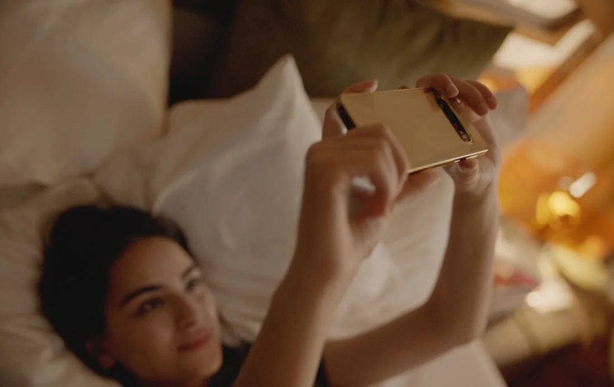
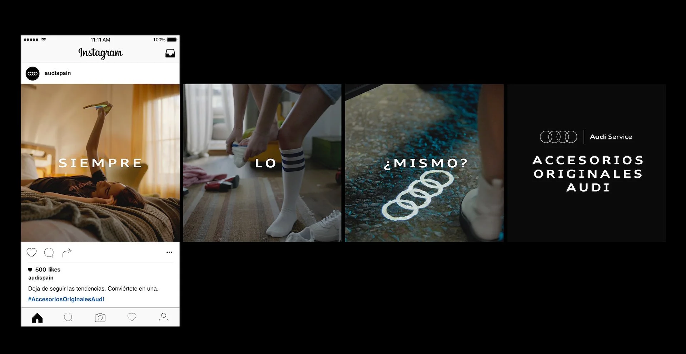
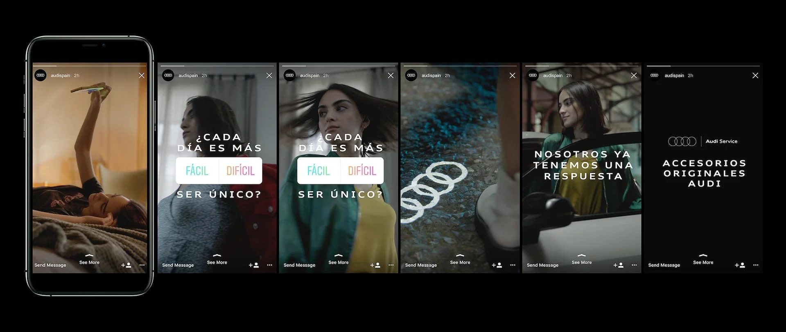
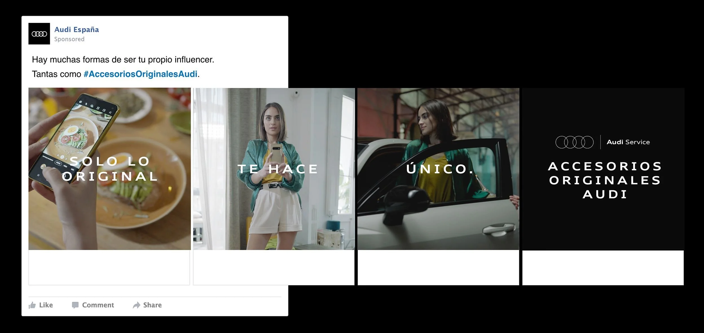
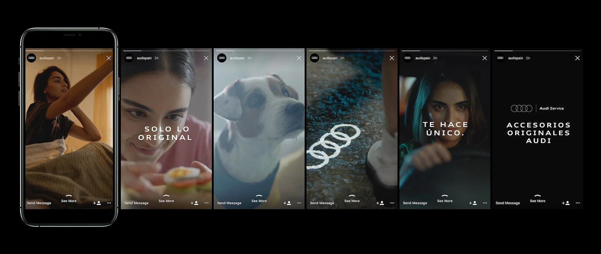

Accesorios Originales Audi
Concepto: Creyentes de lo imposible.
> Spot / IG Stories / Content Orgánico
> Brief: Presentar la colección de Accesorios Originales Audi
> Director de Arte: Ferran León / Director Creativo: Guille Ramírez
> Productora: Garage



